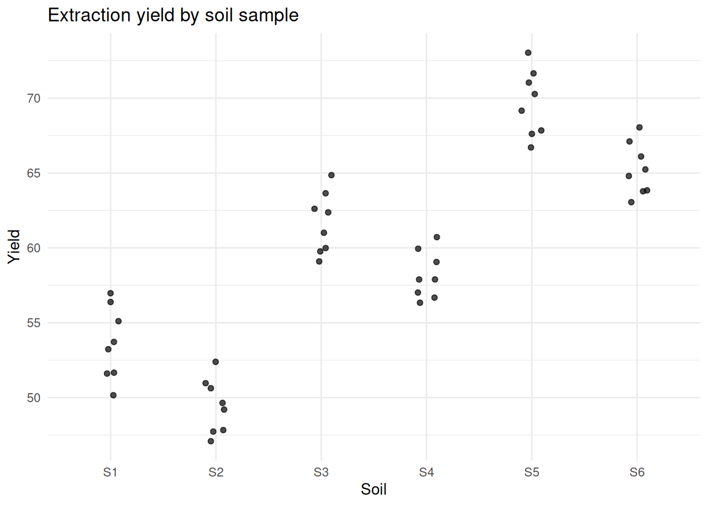
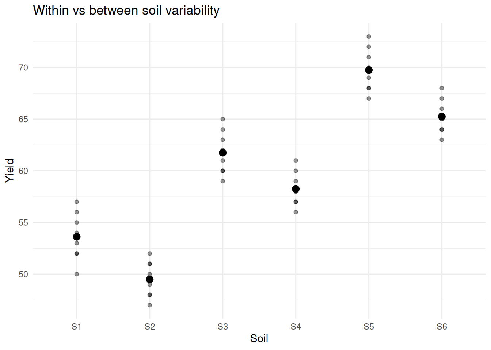
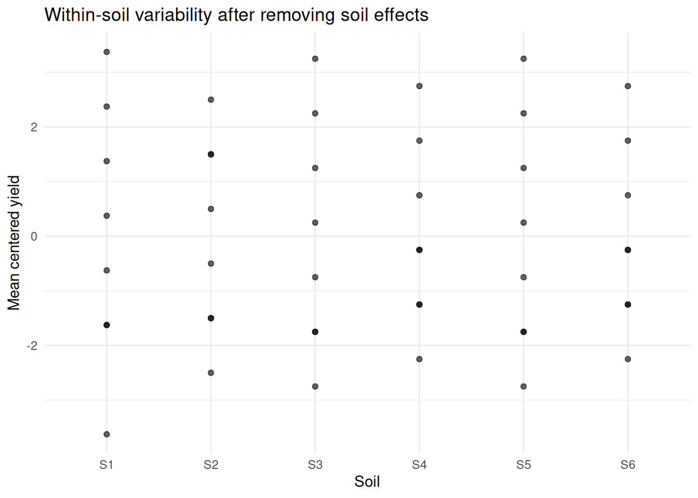
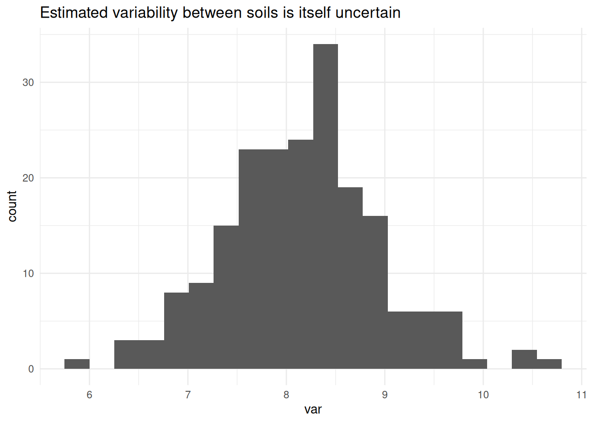

library(knitr)
source("R/create_dataset.R")Trying to Understand Variability in Extraction Yield
Why I started looking into mixed models
I did not start from mixed models.
I started from a practical concern in analytical chemistry:
how much of the variability I see is due to the method, and how much comes from the matrix?
More specifically:
am I overestimating the reliability of my results because I am treating dependent observations as independent?
The experiment
The goal is to study extraction yield of a compound.
We vary:
- extraction solvent
- temperature
And we measure:
- extraction yield
At first glance, this looks like a standard factorial experiment.
What makes this experiment different
The samples are not identical.
They come from different soil samples.
Each soil:
- has its own composition
- has its own organic content
- behaves differently during extraction
Within each soil sample:
- we apply different solvents
- we vary temperature
- we take replicate measurements
So the structure is:
- Soil sample
→ Solvent / Temperature
→ Replicates
The data
dataset <- create_dataset()
knitr::kable(dataset)| Soil | Temp | Solvent | Rep | Yield |
|---|---|---|---|---|
| S1 | Low | A | 1 | 52 |
| S1 | Low | A | 2 | 50 |
| S1 | Low | B | 1 | 55 |
| S1 | Low | B | 2 | 54 |
| S1 | Low | C | 1 | 57 |
| S1 | Low | C | 2 | 56 |
| S1 | Low | D | 1 | 53 |
| S1 | Low | D | 2 | 52 |
| S2 | Low | A | 1 | 48 |
| S2 | Low | A | 2 | 47 |
| S2 | Low | B | 1 | 51 |
| S2 | Low | B | 2 | 50 |
| S2 | Low | C | 1 | 52 |
| S2 | Low | C | 2 | 51 |
| S2 | Low | D | 1 | 49 |
| S2 | Low | D | 2 | 48 |
| S3 | Med | A | 1 | 60 |
| S3 | Med | A | 2 | 59 |
| S3 | Med | B | 1 | 63 |
| S3 | Med | B | 2 | 62 |
| S3 | Med | C | 1 | 65 |
| S3 | Med | C | 2 | 64 |
| S3 | Med | D | 1 | 61 |
| S3 | Med | D | 2 | 60 |
| S4 | Med | A | 1 | 57 |
| S4 | Med | A | 2 | 56 |
| S4 | Med | B | 1 | 59 |
| S4 | Med | B | 2 | 58 |
| S4 | Med | C | 1 | 61 |
| S4 | Med | C | 2 | 60 |
| S4 | Med | D | 1 | 58 |
| S4 | Med | D | 2 | 57 |
| S5 | High | A | 1 | 68 |
| S5 | High | A | 2 | 67 |
| S5 | High | B | 1 | 71 |
| S5 | High | B | 2 | 70 |
| S5 | High | C | 1 | 73 |
| S5 | High | C | 2 | 72 |
| S5 | High | D | 1 | 69 |
| S5 | High | D | 2 | 68 |
| S6 | High | A | 1 | 64 |
| S6 | High | A | 2 | 63 |
| S6 | High | B | 1 | 66 |
| S6 | High | B | 2 | 65 |
| S6 | High | C | 1 | 68 |
| S6 | High | C | 2 | 67 |
| S6 | High | D | 1 | 65 |
| S6 | High | D | 2 | 64 |
First observation
library(ggplot2)
ggplot(dataset, aes(x = Soil, y = Yield)) +
geom_jitter(width = 0.1, alpha = 0.7) +
labs(title = "Extraction yield by soil sample") +
theme_minimal()
At this point, something becomes difficult to ignore.
Measurements from the same soil were consistently closer to each other than to measurements from other soils.
That was the first sign that I was not observing independent data points, but repeated observations of the same underlying systems.
A question that changed the analysis
are these observations independent?
Because if they are not:
- the model I use is misaligned
- the amount of information is overestimated
Looking at the variability more carefully
soil_means <- dataset[, .(mean_yield = mean(Yield)), by = Soil]
ggplot(dataset, aes(x = Soil, y = Yield)) +
geom_point(alpha = 0.4) +
geom_point(data = soil_means, aes(y = mean_yield), size = 3) +
labs(title = "Within vs between soil variability") +
theme_minimal()
There are clearly two sources of variation:
- differences between soils
- differences within soils
What I was doing initially
m_naive <- lm(Yield ~ Temp + Solvent, data = dataset)
summary(m_naive)
Call:
lm(formula = Yield ~ Temp + Solvent, data = dataset)
Residuals:
Min 1Q Median 3Q Max
-3.1458 -1.9948 -0.1771 2.0208 3.0208
Coefficients:
Estimate Std. Error t value Pr(>|t|)
(Intercept) 65.3958 0.8009 81.650 < 2e-16 ***
TempLow -15.9375 0.8009 -19.899 < 2e-16 ***
TempMed -7.5000 0.8009 -9.364 7.68e-12 ***
SolventB 2.7500 0.9248 2.973 0.00486 **
SolventC 4.5833 0.9248 4.956 1.23e-05 ***
SolventD 1.0833 0.9248 1.171 0.24805
---
Signif. codes: 0 '***' 0.001 '**' 0.01 '*' 0.05 '.' 0.1 ' ' 1
Residual standard error: 2.265 on 42 degrees of freedom
Multiple R-squared: 0.91, Adjusted R-squared: 0.8993
F-statistic: 84.91 on 5 and 42 DF, p-value: < 2.2e-16This assumes:
- all observations are independent
- variability is homogeneous
At this point, that assumption no longer seems reasonable.
First correction: acknowledging structure
m_aov <- aov(Yield ~ Temp + Solvent + Error(Soil), data = dataset)
summary(m_aov)
Error: Soil
Df Sum Sq Mean Sq F value Pr(>F)
Temp 2 2034.4 1017 15.41 0.0264 *
Residuals 3 198.1 66
---
Signif. codes: 0 '***' 0.001 '**' 0.01 '*' 0.05 '.' 0.1 ' ' 1
Error: Within
Df Sum Sq Mean Sq F value Pr(>F)
Solvent 3 144.40 48.13 107.4 <2e-16 ***
Residuals 39 17.48 0.45
---
Signif. codes: 0 '***' 0.001 '**' 0.01 '*' 0.05 '.' 0.1 ' ' 1This respects the experimental design.
But it mainly adjusts how tests are computed. It still does not parameterize variability as a quantity we can interpret.
Introducing a mixed model
Instead of asking: what is the correct test? I started asking: what generates these data?
To answer this question I tried to set up my fist mixel model.
library(lme4)
library(lmerTest)
m_lmer <- lmer(Yield ~ Temp + Solvent + (1 | Soil), data = dataset)
summary(m_lmer)Linear mixed model fit by REML. t-tests use Satterthwaite's method [
lmerModLmerTest]
Formula: Yield ~ Temp + Solvent + (1 | Soil)
Data: dataset
REML criterion at convergence: 114.8
Scaled residuals:
Min 1Q Median 3Q Max
-2.25080 -0.64330 -0.06224 0.78819 1.35905
Random effects:
Groups Name Variance Std.Dev.
Soil (Intercept) 8.1966 2.8630
Residual 0.4482 0.6695
Number of obs: 48, groups: Soil, 6
Fixed effects:
Estimate Std. Error df t value Pr(>|t|)
(Intercept) 65.3958 2.0382 3.0409 32.085 5.99e-05 ***
TempLow -15.9375 2.8727 3.0000 -5.548 0.011548 *
TempMed -7.5000 2.8727 3.0000 -2.611 0.079633 .
SolventB 2.7500 0.2733 39.0000 10.062 2.15e-12 ***
SolventC 4.5833 0.2733 39.0000 16.770 < 2e-16 ***
SolventD 1.0833 0.2733 39.0000 3.964 0.000305 ***
---
Signif. codes: 0 '***' 0.001 '**' 0.01 '*' 0.05 '.' 0.1 ' ' 1
Correlation of Fixed Effects:
(Intr) TempLw TempMd SlvntB SlvntC
TempLow -0.705
TempMed -0.705 0.500
SolventB -0.067 0.000 0.000
SolventC -0.067 0.000 0.000 0.500
SolventD -0.067 0.000 0.000 0.500 0.500This is where the interpretation changes.
(1 | Soil) means:
- each soil has its own baseline
- these baselines vary
- that variability is estimated
Looking at the variability directly
vc <- VarCorr(m_lmer)
var_soil <- as.numeric(vc$Soil)
var_res <- attr(vc, "sc")^2
var_soil[1] 8.196582var_res[1] 0.4481838Now variability is explicit:
- between soils
- within soils
The estimation of similarity among samples within a soil can be calculated with intraclass correlation (ICC):
ICC <- var_soil / (var_soil + var_res)
ICC[1] 0.9481555This can be interpreted as the proportion of total variance attributable to differences between soils. An ICC close to 1 means that observations within the same soil are very similar.
In that case, adding more replicates within the same soil increases precision within that soil, but contributes very little to understanding variability across soils.
I was optimizing the wrong dimension of my experiment: replication instead of diversity.
Visualizing what remains within soils
dt_centered <- copy(dataset)
dt_centered[, centered := Yield - mean(Yield), by = Soil]
ggplot(dt_centered, aes(x = Soil, y = centered)) +
geom_point(alpha = 0.6) +
labs(title = "Within-soil variability after removing soil effects",
y = "Mean centered yield") +
theme_minimal()
Most of the variation is removed when accounting for soil.
What I am actually estimating
I am not trying to compare these specific soils. I am trying to understand how much extraction yield would vary if I analyzed new soils.
This is a property of a population and it is estimated by a so called random effect.
To estimate a property of a population, I’m assuming:
- soils are representative
- there are enough of them
Otherwise the estimate of variability may not be reliable
Exploring uncertainty of the estimation
To explore this, I used a parametric bootstrap based on the fitted model. This generates new datasets consistent with the model assumptions, including the estimated variability between soils.
The resulting distribution shows that even variance estimates can be quite unstable with few groups.
set.seed(123)
boot_fun <- function(model) {
as.numeric(VarCorr(model)$Soil)
}
boot_res <- bootMer(
m_lmer,
FUN = boot_fun,
nsim = 200,
use.u = TRUE,
type = "parametric"
)ggplot(data.frame(var = boot_res$t), aes(x = var)) +
geom_histogram(bins = 20) +
labs(title = "Estimated variability between soils is itself uncertain") +
theme_minimal()
Implications for experimental design
If the goal is to understand variability across soils:
- adding more replicates within the same soil has diminishing returns
- adding more soils increases the amount of independent information
This was not obvious to me at the beginning.
What would happen if I ignored soil?
Up to this point, I have two possible models:
- a model that ignores soil structure
- a model that explicitly accounts for it
The question is:
does it actually make a difference?
summary(m_naive)
Call:
lm(formula = Yield ~ Temp + Solvent, data = dataset)
Residuals:
Min 1Q Median 3Q Max
-3.1458 -1.9948 -0.1771 2.0208 3.0208
Coefficients:
Estimate Std. Error t value Pr(>|t|)
(Intercept) 65.3958 0.8009 81.650 < 2e-16 ***
TempLow -15.9375 0.8009 -19.899 < 2e-16 ***
TempMed -7.5000 0.8009 -9.364 7.68e-12 ***
SolventB 2.7500 0.9248 2.973 0.00486 **
SolventC 4.5833 0.9248 4.956 1.23e-05 ***
SolventD 1.0833 0.9248 1.171 0.24805
---
Signif. codes: 0 '***' 0.001 '**' 0.01 '*' 0.05 '.' 0.1 ' ' 1
Residual standard error: 2.265 on 42 degrees of freedom
Multiple R-squared: 0.91, Adjusted R-squared: 0.8993
F-statistic: 84.91 on 5 and 42 DF, p-value: < 2.2e-16summary(m_lmer)Linear mixed model fit by REML. t-tests use Satterthwaite's method [
lmerModLmerTest]
Formula: Yield ~ Temp + Solvent + (1 | Soil)
Data: dataset
REML criterion at convergence: 114.8
Scaled residuals:
Min 1Q Median 3Q Max
-2.25080 -0.64330 -0.06224 0.78819 1.35905
Random effects:
Groups Name Variance Std.Dev.
Soil (Intercept) 8.1966 2.8630
Residual 0.4482 0.6695
Number of obs: 48, groups: Soil, 6
Fixed effects:
Estimate Std. Error df t value Pr(>|t|)
(Intercept) 65.3958 2.0382 3.0409 32.085 5.99e-05 ***
TempLow -15.9375 2.8727 3.0000 -5.548 0.011548 *
TempMed -7.5000 2.8727 3.0000 -2.611 0.079633 .
SolventB 2.7500 0.2733 39.0000 10.062 2.15e-12 ***
SolventC 4.5833 0.2733 39.0000 16.770 < 2e-16 ***
SolventD 1.0833 0.2733 39.0000 3.964 0.000305 ***
---
Signif. codes: 0 '***' 0.001 '**' 0.01 '*' 0.05 '.' 0.1 ' ' 1
Correlation of Fixed Effects:
(Intr) TempLw TempMd SlvntB SlvntC
TempLow -0.705
TempMed -0.705 0.500
SolventB -0.067 0.000 0.000
SolventC -0.067 0.000 0.000 0.500
SolventD -0.067 0.000 0.000 0.500 0.500The two models are fitted on the same data, but they are based on different assumptions:
lm()assumes all observations are independentlmer()assumes observations within the same soil are correlated
This affects how uncertainty is estimated.
Looking at standard errors:
coef(summary(m_naive)) Estimate Std. Error t value Pr(>|t|)
(Intercept) 65.395833 0.8009326 81.649607 6.575338e-48
TempLow -15.937500 0.8009326 -19.898678 5.330250e-23
TempMed -7.500000 0.8009326 -9.364084 7.683805e-12
SolventB 2.750000 0.9248373 2.973496 4.860733e-03
SolventC 4.583333 0.9248373 4.955827 1.228580e-05
SolventD 1.083333 0.9248373 1.171377 2.480499e-01coef(summary(m_lmer)) Estimate Std. Error df t value Pr(>|t|)
(Intercept) 65.395833 2.0382134 3.040858 32.084881 5.993342e-05
TempLow -15.937500 2.8727347 3.000000 -5.547850 1.154772e-02
TempMed -7.500000 2.8727347 3.000000 -2.610753 7.963327e-02
SolventB 2.750000 0.2733081 39.000000 10.061906 2.147974e-12
SolventC 4.583333 0.2733081 39.000000 16.769844 1.993791e-19
SolventD 1.083333 0.2733081 39.000000 3.963781 3.051311e-04In the mixed model, standard errors do not change uniformly: some increase, others decrease. This depends on where each effect is estimated in the experimental structure.
In my case:
- temperature is applied at the soil level
- solvent is applied within each soil
This leads to two very different situations.
For temperature:
- the effective number of independent observations is the number of soils
- uncertainty increases
- standard errors become larger
For solvent:
- comparisons are made within the same soil
- many more observations contribute
- standard errors become smaller
So the mixed model is not simply more conservative, it reallocates independent information correctly across effects.
If I ignore soil:
- I treat all 48 observations as independent
- I underestimate uncertainty for effects applied at the soil level
If I account for soil:
- I recognize that observations are clustered
- I use the appropriate level of variability for each effect
Ignoring structure is not neutral and it leads to:
- overconfidence for some effects
- distorted comparisons between effects
- potentially misleading conclusions
Final takeaway
Mixed models were not a technical upgrade and hey became necessary because:
- the data were structured
- that structure mattered
- ignoring it changed the conclusions
- I was interested in a property of a population, not in comparing well defined categories.
What I am still trying to understand
- How many soil samples are enough?
- When does this variability start to affect decisions?
- When do these models change conclusions in practice?
- When is the added complexity actually justified?